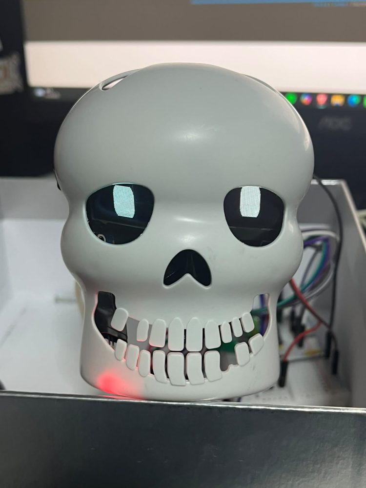

Calaverita parlante con IA
Una calavera con ESP32 que detecta voz con un micrófono I²S y envía la frase por Wi-Fi a un servidor en la PC que la transcribe con Whisper, genera la respuesta con un modelo de lenguaje local (gemma3:4b en Ollama) y la convierte en voz con Piper; la calavera la reproduce mientras anima dos ojos OLED. Si la PC no está disponible, usa Gemini como respaldo.
- Estado
- Funcional
- Periodo
- ago – oct 2026
- Versión
- calavera_pc + servidor_calavera (final)
- Categorías
- IoT · ESP32 · APIs · Audio
Objetivo y contexto
Construir un personaje interactivo de Día de Muertos que funcione como asistente de voz con palabra clave, con el procesamiento de lenguaje corriendo en una computadora local y respaldo en la nube.
Problema. Construir un asistente de voz completo con un microcontrolador: escuchar, decidir si le hablan, responder con voz y expresar estados, sin depender de un servicio de pago.
Arquitectura del sistema
El sistema se divide en dos partes. En el ESP32, una tarea FreeRTOS fijada al núcleo 0 lee el micrófono, detecta voz, graba la frase y reproduce audio, mientras el lazo principal anima los ojos y controla el LED. En la PC, un servidor HTTP en Python recibe el WAV, lo transcribe con faster-whisper, verifica la palabra clave, genera la respuesta con un modelo local en Ollama y la sintetiza con Piper, aplicando tono grave y eco. El servidor se anuncia cada 2 s por difusión UDP para que la calavera encuentre su IP sin configuración. Si la PC no responde, la calavera envía la frase a Gemini por HTTPS.
Diagrama de bloques
Pines y buses tomados del código fuente.
Hardware y componentes
| Componente | Función | Conexión | Evidencia |
|---|---|---|---|
| ESP32 DevKit (clásico) | Controlador y Wi-Fi | — | Verificado en código |
| Micrófono INMP441 | Captura de voz | I²S SCK 14 · WS 15 · SD 35 | Verificado en código |
| Amplificador MAX98357A + bocina | Reproducción | I²S BCLK 32 · LRC 25 · DIN 33 | Verificado en código |
| 2 OLED SSD1306 0.91" 128×32 | Ojos | Wire 26/27 y Wire1 21/22 | Verificado en código |
| LED RGB | Boca al ritmo de la voz | R 4 · G 13 · B 12 | Verificado en código |
| Computadora con Windows | Servidor de voz y modelo de lenguaje local | Misma red Wi-Fi | Verificado en código |
Firmware, software y protocolos
- Captura
- I²S a 16 kHz; elimina componente DC, aplica ganancia y submuestrea a 8 kHz; búfer circular con 0.4 s previos a la voz y máximo 4 s por frase Verificado en código
- Detección de voz
- Umbral adaptativo al ruido ambiente, nivel mínimo y duración mínima de 800 ms para descartar golpes Verificado en código
- Descubrimiento
- La PC difunde "CALAVERA_PC 8000" por UDP cada 2 s; la calavera guarda la IP y el puerto Verificado en código
- Servidor (Python)
- ThreadingHTTPServer: POST /preguntar recibe el WAV y devuelve PCM de 16 bits con cabeceras X-Frecuencia y X-Texto; 204 si no le hablaban Verificado en código
- Voz a texto
- faster-whisper (modelo base, int8 en CPU) en español, con normalización de volumen Verificado en código
- Palabra clave
- Coincidencia aproximada (difflib ≥ 0.75) sobre 1 a 3 palabras unidas, para tolerar errores de transcripción Verificado en código
- Modelo de lenguaje
- gemma3:4b en Ollama con personalidad definida por prompt de sistema y memoria de los últimos 4 turnos Verificado en código
- Texto a voz
- Piper con la voz es_MX-claude-high; tono grave (reproducción al 85 %) y eco calculado con NumPy Verificado en código
- Respaldo
- Si la PC falla, petición HTTPS a Gemini: transcribe y responde, y luego genera la voz Verificado en código
Funcionamiento
- En la PC se ejecuta iniciar_cerebro.bat: carga Whisper, la voz de Piper y el modelo de Ollama, y empieza a anunciarse en la red.
- Al arrancar, la calavera mide 1.5 s de ruido ambiente y escucha los anuncios UDP hasta encontrar el servidor.
- Detecta el inicio de una frase, la graba incluyendo 0.4 s previos y la envía como WAV al servidor.
- Si la frase no menciona "Calavera", el servidor responde 204 y la calavera la ignora.
- Mientras espera la respuesta, los ojos miran hacia arriba y el LED se pone morado; al hablar, el LED rojo sigue el ritmo de la voz.
- Después de hablar, ignora el micrófono 700 ms para no escucharse a sí misma.
- El servidor guarda las últimas 5 grabaciones con su nivel de pico, promedio y saturación para ajustar el micrófono.
Decisiones técnicas
- Procesamiento en una PC local
- Whisper, Ollama y Piper corren sin costo ni límite de peticiones; Gemini queda solo como respaldo.
- Descubrimiento por UDP
- Evita escribir la IP de la PC en el firmware: la calavera la encuentra sola en la red.
- Audio en una tarea aparte
- La lectura I²S bloqueante no congela la animación de los ojos.
- Palabra clave en el servidor
- La transcripción completa permite reconocer "Calavera" aunque Whisper la escriba mal.
- Pre-grabación de 0.4 s
- Evita cortar la primera sílaba de la frase.
- Respuesta en PCM crudo
- El ESP32 reproduce el audio mientras llega, sin decodificar ni guardar el archivo completo.
Fotografías y video

Pruebas y resultados
- Prototipo ensamblado en carcasa con ojos OLED animados y LED de boca funcionando. Foto / video
- Ciclo de escucha, espera de respuesta (LED morado, ojos arriba) y respuesta hablada (LED rojo de boca), en video. Foto / video
- Versión final con servidor local terminada y funcionando. Declarado por el autor
Problemas encontrados y soluciones
| Problema | Solución | Fuente |
|---|---|---|
| Límite de uso de la API gratuita | Se movió el procesamiento a un servidor local con Whisper, Ollama y Piper; Gemini queda como respaldo. | Verificado en código |
| La calavera no sabía la IP de la PC | Anuncio UDP periódico del servidor y descubrimiento automático en el ESP32. | Verificado en código |
| Whisper escribía mal la palabra clave | Comparación aproximada con difflib uniendo de 1 a 3 palabras. | Verificado en código |
| Grabaciones con volumen bajo | Normalización del audio en el servidor y registro de pico y saturación de cada grabación. | Verificado en código |
| La calavera se escuchaba a sí misma | Ventana de 700 ms en la que ignora el micrófono tras hablar. | Verificado en código |
| Fallos de DNS del router | Si no resuelve el servidor de Gemini, cambia a DNS 8.8.8.8 y 1.1.1.1 y reintenta. | Verificado en código |
Limitaciones y mejoras futuras
Limitaciones
- Necesita la PC encendida y en la misma red para usar el modelo local.
- Algunas redes de invitados bloquean la comunicación entre dispositivos y el descubrimiento UDP.
- El cliente HTTPS del respaldo no valida el certificado (setInsecure).
Mejoras futuras
- Medir la latencia de cada etapa (transcripción, modelo y voz) y la tasa de aciertos de la palabra clave.
- Detección de palabra clave en el ESP32 para no enviar audio innecesario.
- Ejecutar el servidor en una Raspberry Pi o mini PC dedicada.
Evolución por versiones
- asistente_esp32_gemini · ago 2026
Primer asistente de voz: ESP32 con INMP441, OLED y LED RGB conectado a Gemini.
- calavera_prueba
Versión sin conexión: reacciona a voz y a un sensor PIR con audios grabados y ojos animados.
- calavera_prueba2 · oct 2026
Añade Wi-Fi, Gemini, palabra clave y voz generada.
- calavera_pc + servidor_calavera · oct 2026
Versión final: Whisper, modelo local en Ollama y Piper en la PC, descubrimiento UDP y Gemini como respaldo.
Código y documentación
github.com/nshtpdrz/calaverita-parlante-esp32
Incluye todas las versiones del firmware, diagrama de bloques e instrucciones para compilar. Las credenciales se leen de un archivo secrets.h que no se publica.